百米冲刺什么意思[捂脸]
望族留家乡
这边女机长可比国内多多了，女性在国内学飞才是难上加难
女性飞行员很危险的，需要万里挑一的身体素质，这个身体素质不是后天锻炼可以弥补的，需要天生的体质。因为月经期间不能飞会大出血，平时可能会子宫脱垂，很危险的
小猫的世界里 如果鼻子干干的就证明不健康 所以它给你舔湿鼻子
得了一种听到remember me 就想哭的病
虎仔走了有些时候了 但在能看见别的小猫时会想起来 我曾经也有过那么一只可爱的小猫！自己也是一边看照片 一边摸着眼泪想起了和它的点点滴滴 可能和最近生活情绪有关吧 好想你虎仔.
人，你总说时间从手指缝里溜走了，可是你看，咪的爪爪之间没有缝，只有毛茸茸。或许时间没有偷偷溜走，只是把自己藏在了毛茸茸里。 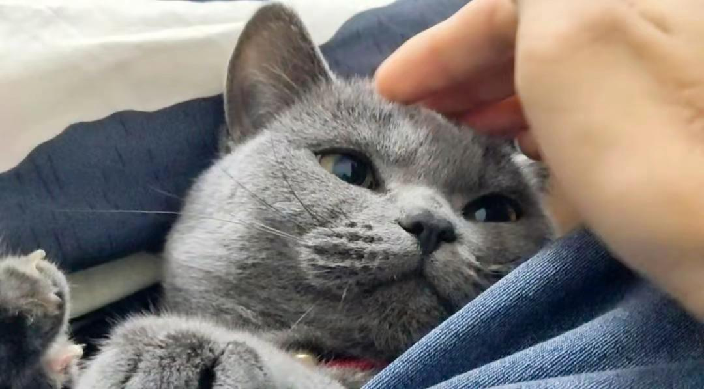
[流泪]去香港迪士尼 烟花放到一半突然放remember me 给我哭成狗了 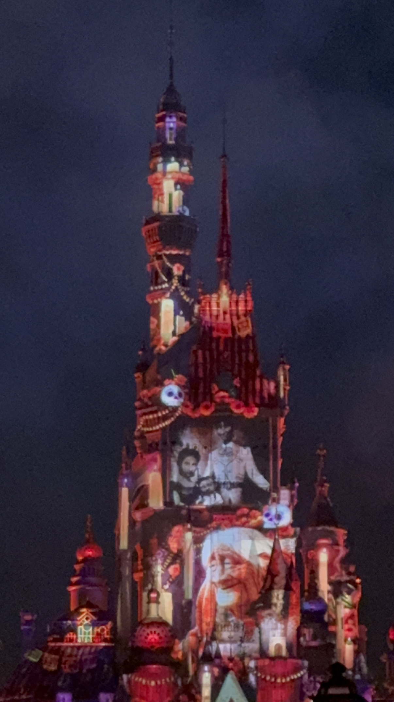
你有了一个独立的相册，相册再也没更新你的照片 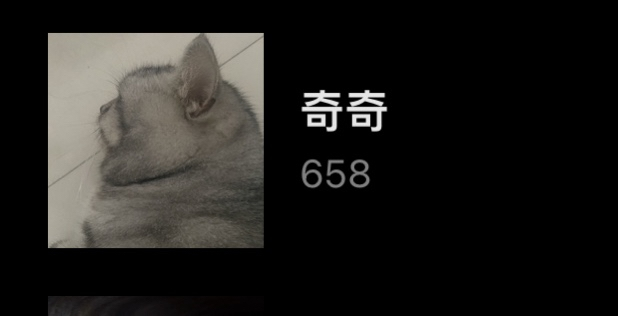
你是我每天晚上都会悄悄揭开的伤疤 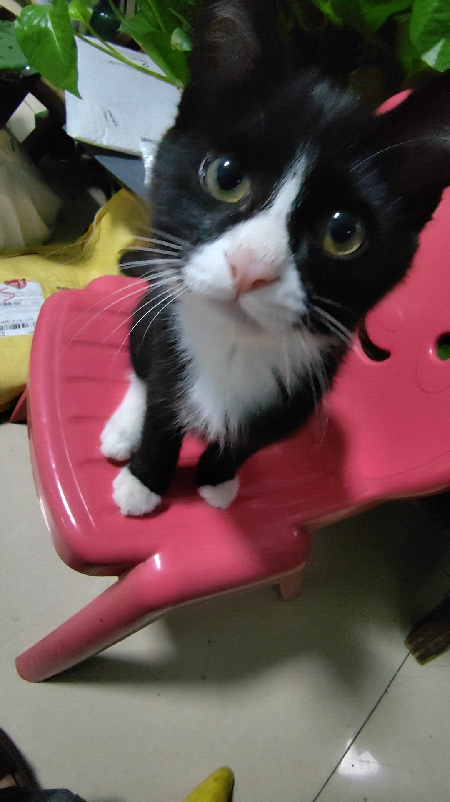
想养猫 但是家里沙发新买的 怎么破局
朋友送我的，我的小猫已经走丢好几年了，看得我差点哭出来 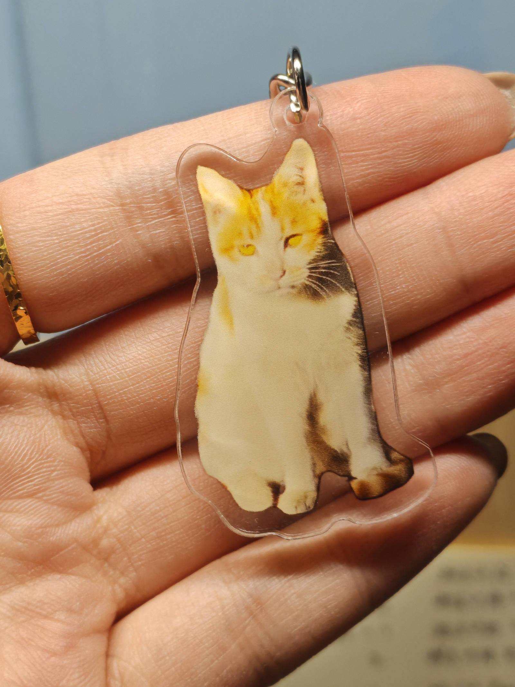
当离别成为既定的事实，永不遗忘是人能给咪最后的礼物🥺
养宠人的痛就是宠物去世 真的太痛了[流泪]
端庄大方长公主、张牙舞爪康姨妈，演得好好
什么？老花生日没叫我
蹲个男朋友 我目前五年级，是纪律委员，也算是个官，不会委屈你。 1️⃣、谈过一次被渣过，很深情，虽然我年纪小，但是我可以爱你很久，陪你到老。 2️⃣、游戏的话我是全校最高段位，永恒钻石一三颗星，主玩孙悟空，会跳棍存棍。一进校门有人对我说王者大神来了，你就玩瑶挂着躺平就行，什么都不用管。 3️⃣、老子要是看上你，是你的荣幸，你必须以我为主，永远别想逃出老子的手掌心。男人，你要是敢反抗小心老子要了你的命，被老子这种极品看上是你八辈子修来的福气，我希望你能识相一点。 4️⃣、每周可以给你点一杯蜜雪冰城，够大方了吧，小学谁还能有你风光。
谁懂这么萌的一张脸开口沙沙的好性感啊啊啊啊啊啊啊[猪头]
我坚持不跟你说话 不是因为我不爱你 更不是因为我不想你 而是你给我的感觉像是 我在打扰你
wow这个小嘴巴
谁懂主包这个手的含金量啊啊啊啊啊啊！主包有没有人夸过啊！ 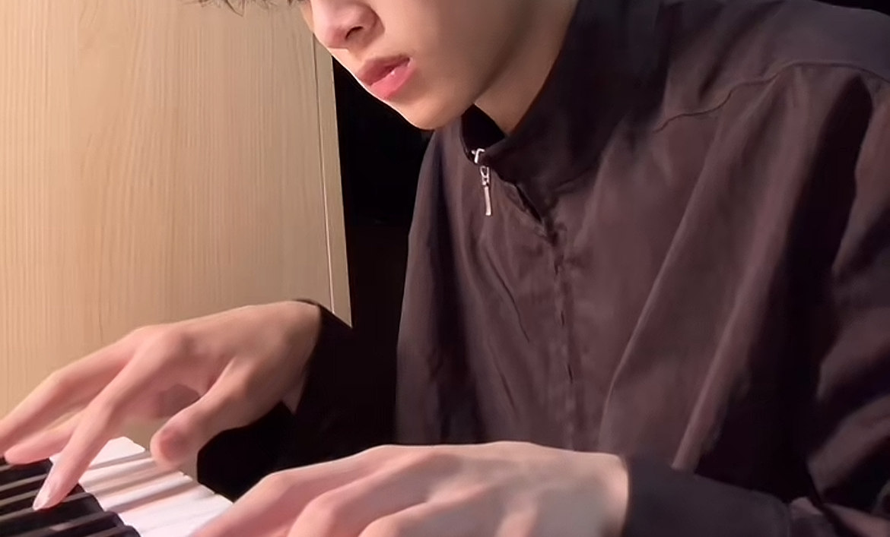
电子琴弹的不好唱[流泪]下次用吉他唱一次[眼含热泪]
是这样吗[憨笑]那可太棒了[送心][送心] 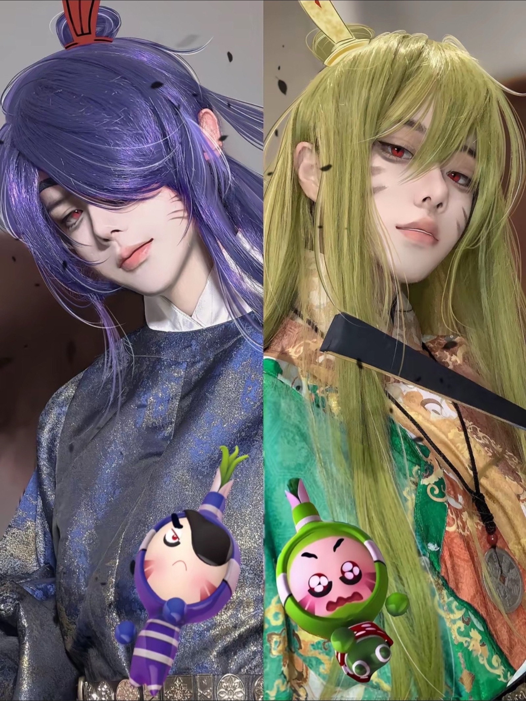
手机真是饿了，家里没红薯用土豆咋样[憨笑][比心]
四个人的友谊，总有一个人会转学 三个人的友谊，总有一个人会退出
小贵再也不是缺牙巴女孩啦[大笑] 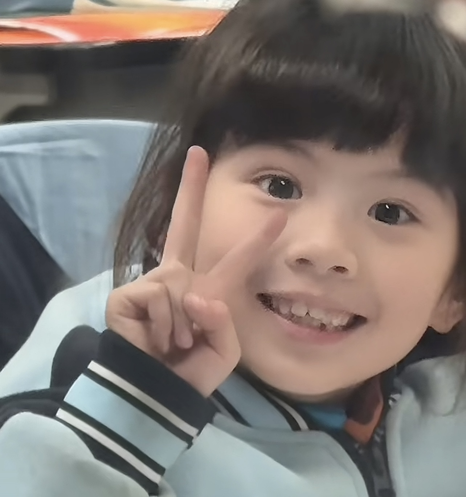
三三接小贵儿放学的时候有没有发现她给同学传话的纸飞机哈哈哈哈哈
不赚钱，你养三喜吗[送心] 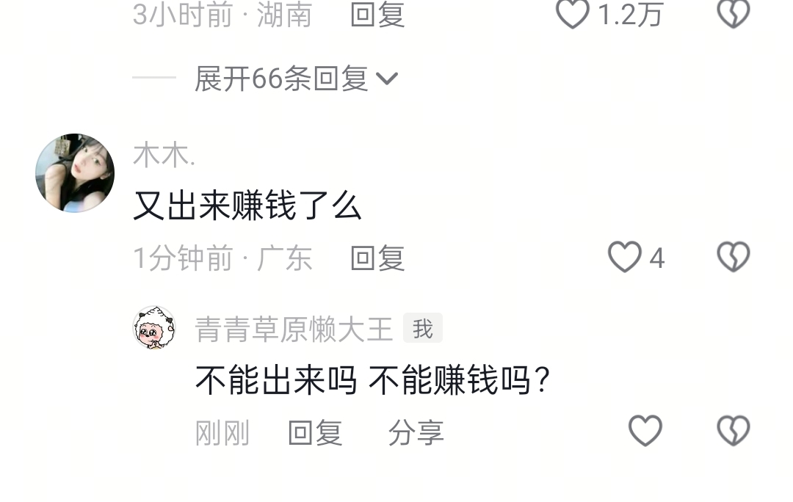
跟去泰国接放学一样，你们两情绪价值都好到位呀！辅导作业的 vlog 能放出来吗，想看[灵机一动] 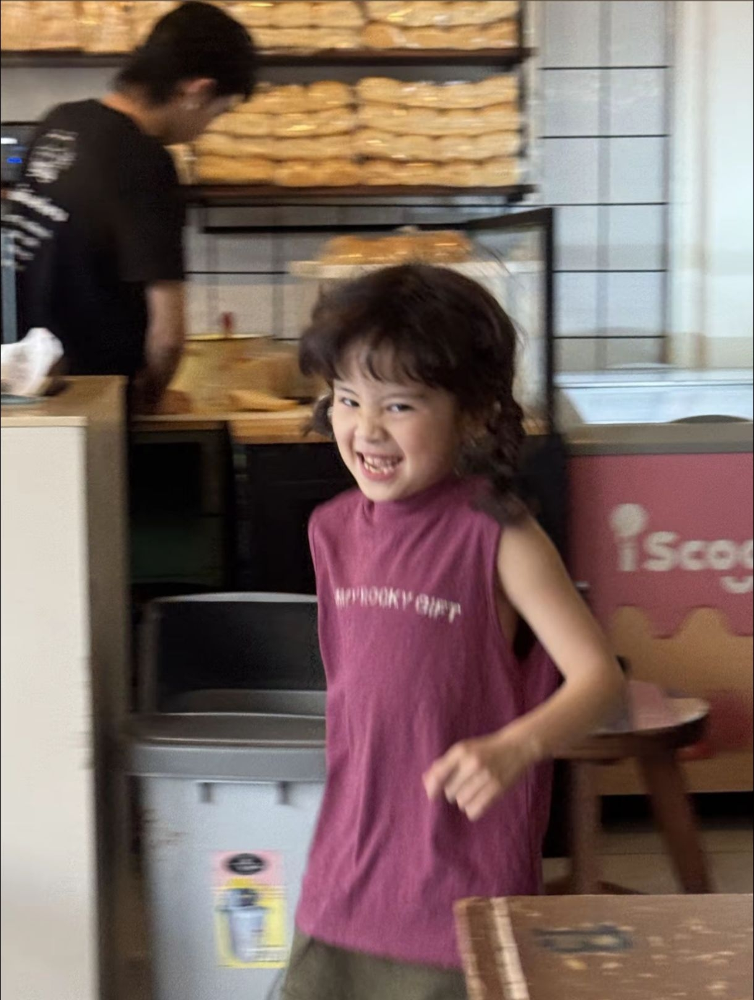
太阔耐了，好乖[可怜] 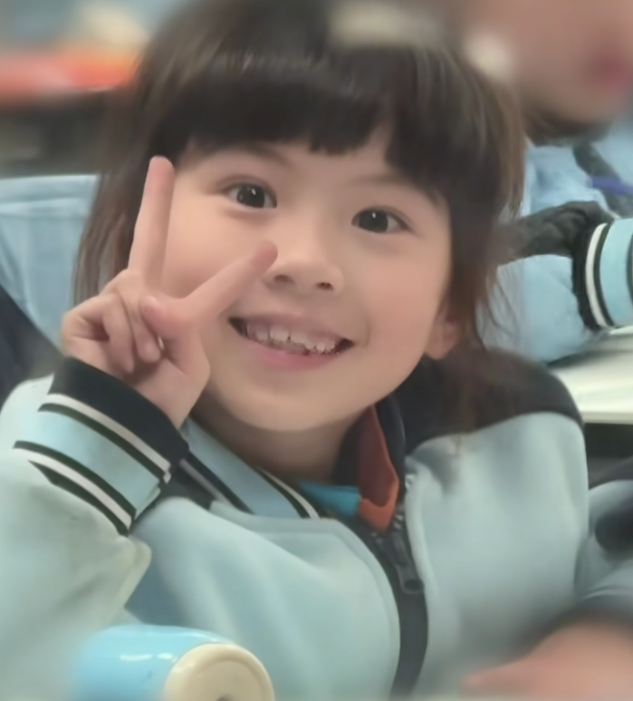
谁能想到这个傻子居然是雪中悍刀行里的儒圣
从小的时候就看过这部剧，印象太深刻了，范冰冰是真美得冒泡啊
这剧特神，只要一看就不想换台
大少爷当上土司还真不亏待傻弟弟[大笑][大笑][大笑]
现在大了看这部剧就会想到他们身上的味道和屋子里的味道 [微笑]
傻子是不知道自己是傻子的，知道说自己是傻子说明他并不是傻
开枪那段笑死我了😂
剧情介绍：这小子一直在装傻，最后坏人互相残杀他成为终极赢家。
基辛格：当你控制了石油，你就控制了所以国家。但当你控制了粮食，你就控制了所有人。
以前也没发现这个剧这么搞笑。开枪那段把少安他爹吓坏了。哈哈哈哈哈哈。看了N遍
大少爷还是不错，至少没想过杀了这弟弟[干饭人][干饭人]
应该不是装傻，是脑子有块区域没发育好，但智力所在区域是完好的
这系列全是吐司 看完饿死了
无能为力学生组[微笑][微笑][微笑]
梓澈被打死前已经四天没吃饭了。监控拍到赵雨蝶虐打了梓澈一个多小时。梓澈的小鞋子掉了，她捡起来，扇他的脸，砸他的头。很热的天，她一脚踢的梓澈跪在滚烫的马路上 。殴打完了之后把梓澈按在水里想淹死他。最后的最后，梓澈已经被打的开始脑出血了，走路踉踉跄跄，还去找自己被打掉的小拖鞋，乖乖跟在赵雨蝶身后自己走回家。但是还是被恶毒的赵雨蝶拖着胳膊，来回的在滚烫马路上，来回的走。 梓澈的身上还有被牙签扎的针眼。梓澈的胃里检查出32颗小石头，那是他饿了之后吃下的“小零食”。梓澈的头顶被发簪暴力插入而断裂在内。梓澈在40多度的天气，被无数次命令面对毒太阳罚站一下午。梓澈的脚上有一个已经溃烂的深洞口。梓澈的小腿有一个贯穿的咬痕。梓澈小小的身体上没有一块好肉。
后妈：赵雨蝶。 亲爸：黄正理这两个狗男女一定要死刑，立马枪决
最让人痛苦的是他已经脑死亡了 但是听到妈妈来了 他居然流出来眼泪 他一直在等妈妈[泣不成声][泣不成声][泣不成声][泣不成声]
谁有 黄正理赵雨蝶 的正脸照片啊 我真的想打印成车贴贴在车上示众[流泪][流泪]
梓澈带着一身重伤，饿着肚子，带着对妈妈的思念离开了人世。他才三岁啊！！！！！！黄正理赵雨蝶死刑！
最后一次被打，孩子昏死过去，晚上自己醒来血肉模糊的一瘸一拐的走回去，然后拖到9点多黄赵才给送到医院，所以妈妈不来不给拔管的医生是梓澈在这个世界上的最后一道光…………
请大家帮梓澈发声[感谢] 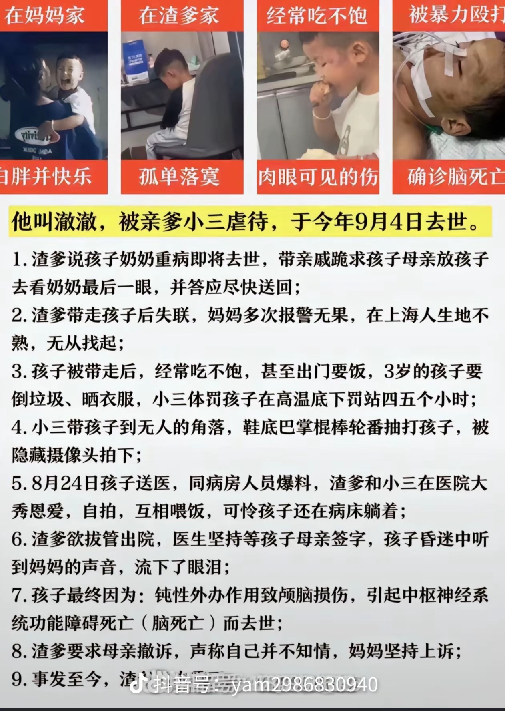
狗男女必须死 畜生
生在妈妈的羊水里，死在妈妈的泪水里[流泪][流泪]
所以，亲生的，跟亲自生的区别真的很大很大啊！[泣不成声]
外婆说哪怕留一口气也好。我们自己救，泪崩了[流泪]
判死刑枪毙立即解决 狗东西
枪毙那些不是人的畜生
这种经济适用婆可是抢手货[流泪]。得祖宗积德才能碰的上。
旋转小鼠咚咚咚，敲得我心砰砰砰
Read more: